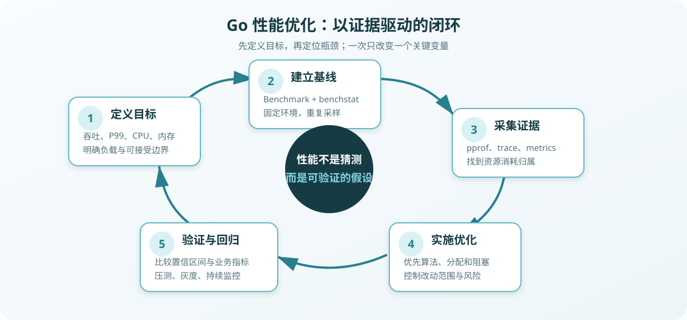
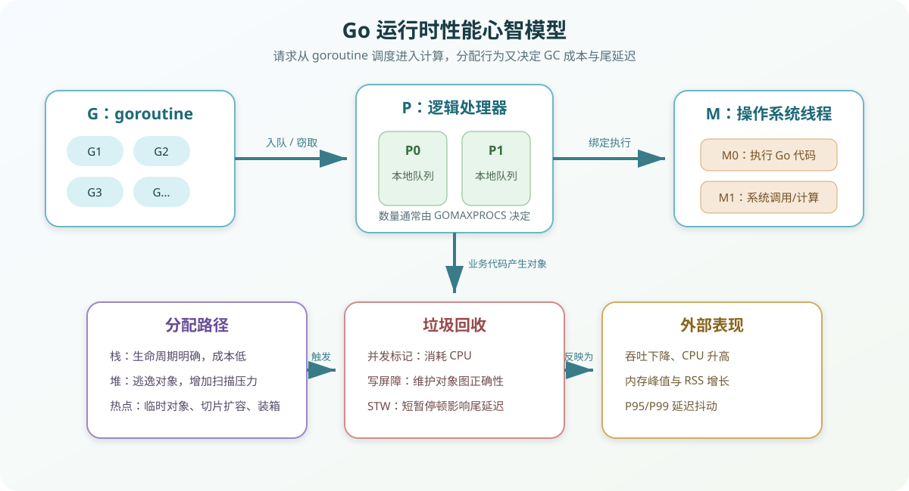

Go 语言高效编程：原理、可观测性与优化
高性能不是“写出更聪明的代码”，而是在明确负载和服务等级目标（SLO）的前提下，用数据识别主要矛盾，以最小风险消除瓶颈，并证明优化在真实环境中仍然成立。
本文示例以 Go 1.24 及以上版本为基准；使用旧版本工具链时，可将 b.Loop() 改为传统的 for i := 0; i < b.N; i++。
目录
- 1. 性能优化的基本原则
- 2. 建立 Go 运行时心智模型
- 3. 建立可信的性能基线
- 4. 用 pprof 定位资源消耗
- 5. 用 trace 和运行时指标解释延迟
- 6. 内存分配与 GC 优化
- 7. CPU 与算法优化
- 8. 并发与同步优化
- 9. I/O、网络与序列化优化
- 10. 生产环境中的性能工程
- 11. 常见误区
- 12. 排障清单
1. 性能优化的基本原则
1.1 先把“快”定义清楚
性能不是单一指标。不同系统的主要目标可能完全不同：
| 场景 | 核心指标 | 常见约束 |
|---|---|---|
| 在线 API | P50、P95、P99 延迟，请求吞吐量 | CPU、内存、下游容量 |
| 批处理任务 | 总完成时间、单位数据处理成本 | 内存峰值、并行度 |
| 网关/代理 | QPS、连接数、转发延迟 | 文件描述符、网络带宽 |
| CLI 工具 | 启动时间、峰值内存 | 本地磁盘、输入规模 |
| 消息消费者 | 每秒消费数、积压量 | 分区数、下游写入能力 |
平均延迟不能代表用户体验。例如，99 次请求耗时 10 ms，1 次请求耗时 1 s，平均值约为 20 ms，但最慢的 1% 用户已经明显受损。因此在线服务通常至少同时观察：
- 吞吐量：
requests/s、MB/s、items/s。 - 延迟分位数：P50 反映常态，P95/P99 反映尾部抖动。
- 饱和度：CPU 利用率、运行队列、连接池等待、磁盘队列。
- 错误率：超时、限流、重试、业务失败比例。
- 成本：每百万请求 CPU 时间、每实例吞吐量、内存占用。
1.2 优化必须形成闭环

一次可靠的优化通常包含以下步骤：
- 定义目标：明确负载、指标和成功标准，例如“在 8 核、并发 200 时，P99 小于 80 ms，错误率低于 0.1%”。
- 建立基线：固定代码、配置、数据集、硬件和 Go 版本，多次测量。
- 采集证据：使用 benchmark、pprof、trace 和业务指标找到资源归属。
- 提出假设：例如“切片反复扩容导致分配增加，进而提高 GC CPU”。
- 实施单一关键改动：缩小变量范围，降低归因难度。
- 验证和回归：比较置信区间，在压测与灰度环境检查副作用。
优化优先级一般遵循：
架构和算法 > I/O 与阻塞 > 内存分配 > 锁竞争 > 局部微优化。
把 O(n²) 改为 O(n log n)，通常比消除一个边界检查更有价值。性能工程首先是建模和测量，其次才是代码技巧。
2. 建立 Go 运行时心智模型

2.1 G-M-P 调度模型
Go 调度器用 G、M、P 协作执行 goroutine：
- G（goroutine）：待执行任务，包含栈、程序计数器和调度状态。
- M（machine）：操作系统线程，真正接受操作系统调度。
- P（processor）：执行 Go 代码所需的逻辑处理器，持有本地运行队列和分配缓存。
GOMAXPROCS 控制能够同时执行 Go 代码的 P 数量。它不是 goroutine 上限，也不是线程池大小。现代 Go 在容器环境中通常能够更合理地感知 CPU 配额，但生产部署仍应检查运行时实际值、容器配额和节流指标是否一致。
调度器会使用本地队列、全局队列和 work stealing 平衡任务。当 goroutine 进入网络轮询等待时，线程可以执行其他任务；当线程陷入阻塞系统调用时，P 可以与其他 M 结合继续调度。以下情况仍可能造成调度压力：
- 创建数量失控的 goroutine，增加栈、调度和 GC 扫描成本。
- 大量可运行 goroutine 争夺少量 P，造成运行队列和尾延迟增长。
- 频繁锁竞争、channel 争用或
runtime.Gosched导致切换成本。 - CGO 调用或不可抢占的外部阻塞占用线程。
- CPU 密集任务与延迟敏感请求共用相同执行资源。
2.2 栈、堆与逃逸
goroutine 的栈从较小空间开始，按需增长和收缩。函数局部变量优先放在栈上；如果编译器无法证明对象不会在函数返回后继续使用，对象就可能逃逸到堆。
type User struct {
ID int64
Name string
}
func newUser(id int64, name string) *User {
// 返回指针不等于一定“性能差”，是否逃逸由编译器分析决定。
return &User{ID: id, Name: name}
}
使用 -gcflags=-m=2 查看逃逸和内联决策：
go build -gcflags="-m=2" ./...
go test -gcflags="-m=2" ./path/to/package
不要为了“零逃逸”盲目改写代码。堆分配本身通常很快，真正的累计成本包括：
- 分配路径消耗 CPU。
- 对象增加 GC 标记扫描工作。
- 存活对象提高堆基线和 RSS。
- 短命对象提高分配速率，使 GC 更频繁。
2.3 垃圾回收如何影响延迟
Go 使用并发、三色标记清扫垃圾回收器。大部分标记工作与业务 goroutine 并发进行，但仍存在短暂 STW（Stop The World）阶段和写屏障成本。
理解 GC 时应区分：
- 分配速率：每秒新分配多少字节，影响 GC 触发频率。
- 存活堆：一轮 GC 后仍可达的对象大小，影响每轮扫描量。
- 堆目标：下一轮 GC 预期触发位置，受
GOGC和内存限制影响。 - RSS：操作系统看到的驻留内存，不等于 Go 堆；还包含栈、代码、mmap、CGO 等。
GOGC=100 大致表示堆相对上一轮存活堆增长 100% 时触发下一轮 GC。增大 GOGC 通常用更多内存换更少 GC CPU；减小则相反。
# 仅作为实验，不应脱离压测直接用于生产
GOGC=200 go test -bench=. -benchmem ./...
Go 还提供软内存限制：
import "runtime/debug"
func configureMemoryLimit(limit int64) {
previous := debug.SetMemoryLimit(limit)
_ = previous
}
也可通过环境变量设置：
GOMEMLIMIT=1536MiB ./server
GOMEMLIMIT 是运行时软限制，不是容器 OOM 的硬防线。应给非 Go 堆内存、内核页缓存和突发流量预留空间；设置过低会造成 GC 频繁运行，出现 CPU 上升但可用吞吐下降的“GC 抖动”。
3. 建立可信的性能基线
3.1 编写可重复的 Benchmark
package encode
import (
"strconv"
"strings"
"testing"
)
func BuildKey(tenant string, id int64) string {
var b strings.Builder
b.Grow(len(tenant) + 1 + 20)
b.WriteString(tenant)
b.WriteByte(':')
b.WriteString(strconv.FormatInt(id, 10))
return b.String()
}
func BenchmarkBuildKey(b *testing.B) {
tenant := "tenant-a"
b.ReportAllocs()
b.ResetTimer()
for b.Loop() {
result := BuildKey(tenant, 123456789)
if result == "" {
b.Fatal("unexpected empty key")
}
}
}
运行基准：
go test -run='^$' -bench='^BenchmarkBuildKey$' -benchmem -count=10 ./...
常见输出指标：
BenchmarkBuildKey-8 21000000 55.2 ns/op 24 B/op 1 allocs/op
ns/op：每次操作的平均墙钟时间。B/op：每次操作平均分配的字节数。allocs/op：每次操作平均堆分配次数。-8：执行基准时的GOMAXPROCS值，不是并发请求数。
基准测试应遵循以下规则：
- 使用固定且有代表性的数据，避免只测空输入。
- 将初始化、随机数据生成和日志排除在计时区间外。
- 防止编译器完全消除待测结果。
- I/O 基准明确使用真实设备、内存缓冲还是 mock。
- 同机、同电源模式、同 Go 版本重复执行。
- 不在启用竞态检测器时比较性能；
-race会显著改变执行特征。
3.2 使用 benchstat 比较结果
分别保存改动前后的多轮结果：
go test -run='^$' -bench=. -benchmem -count=15 ./pkg/encode > old.txt
go test -run='^$' -bench=. -benchmem -count=15 ./pkg/encode > new.txt
benchstat old.txt new.txt
benchstat 会报告样本分布、变化百分比和统计显著性。不要根据单次运行中 2% 的变化宣称优化成功；现代 CPU 的频率调节、后台进程、缓存状态都可能制造噪声。
3.3 区分微基准与系统压测
微基准回答“这个函数在隔离环境中是否更快”，但不能直接回答：
- 数据库连接池是否等待。
- 下游超时是否引发重试放大。
- GC 是否与流量峰值叠加。
- 单实例吞吐提高后，数据库是否成为新瓶颈。
因此优化至少需要两级验证：
- 微基准：证明局部改动确实改变了目标指标。
- 系统压测：在接近生产的数据量、并发、依赖延迟和资源限制下验证 SLO。
4. 用 pprof 定位资源消耗
4.1 在 HTTP 服务中暴露 pprof
推荐把诊断端点放在独立管理端口，并通过网络策略、身份认证或本机监听进行保护。pprof 可能暴露函数名、路径、请求参数和内存内容，绝不能无保护地暴露到公网。
package diagnostic
import (
"context"
"errors"
"log/slog"
"net"
"net/http"
_ "net/http/pprof"
"time"
)
func Serve(ctx context.Context, logger *slog.Logger) error {
server := &http.Server{
Addr: "127.0.0.1:6060",
Handler: http.DefaultServeMux,
ReadHeaderTimeout: 3 * time.Second,
}
listener, err := net.Listen("tcp", server.Addr)
if err != nil {
return err
}
go func() {
<-ctx.Done()
shutdownCtx, cancel := context.WithTimeout(context.Background(), 5*time.Second)
defer cancel()
if err := server.Shutdown(shutdownCtx); err != nil {
logger.Error("关闭诊断服务失败", "error", err)
}
}()
err = server.Serve(listener)
if errors.Is(err, http.ErrServerClosed) {
return nil
}
return err
}
更严格的工程实践是使用独立 http.ServeMux，只显式注册所需诊断处理器，避免业务与管理路由共享默认 mux。
4.2 选择正确的 Profile
| Profile | 回答的问题 | 典型症状 |
|---|---|---|
| CPU | CPU 时间花在哪里 | CPU 高、吞吐低 |
allocs |
历史累计分配由谁产生 | GC 频繁、分配速率高 |
heap |
当前存活对象由谁持有 | 堆持续增长、疑似泄漏 |
| goroutine | goroutine 在哪里等待 | goroutine 数增长、请求卡住 |
| mutex | 锁竞争损失多少时间 | CPU 不高但延迟高 |
| block | goroutine 在何处阻塞 | channel、锁、条件变量等待 |
| threadcreate | 哪些调用导致线程创建 | 线程数异常、CGO/系统调用多 |
采集 30 秒 CPU Profile：
go tool pprof -http=:8080 \
"http://127.0.0.1:6060/debug/pprof/profile?seconds=30"
采集当前存活堆：
go tool pprof -http=:8080 \
"http://127.0.0.1:6060/debug/pprof/heap?gc=1"
采集阻塞和互斥锁数据前，需要根据诊断需求开启采样：
runtime.SetBlockProfileRate(10_000) // 以纳秒为单位采样阻塞事件
runtime.SetMutexProfileFraction(10) // 平均采样约 1/10 的锁竞争事件
采样本身有成本。生产环境应按需开启、限制时间，并在结束后恢复配置。
4.3 正确阅读 CPU 火焰图
火焰图中：
- 横向宽度表示采样占比，不表示时间先后。
- 纵向表示调用栈深度。
- 宽而平的顶部函数通常是直接消耗 CPU 的热点。
- 宽的底部函数可能只是调用入口，需继续向上看具体工作。
pprof 文本界面常用命令：
top
top -cum
list FunctionName
web
peek regexp
flat：函数自身占用的采样时间。cum：函数及其所有下游调用累计时间。
例如 encoding/json 的 cum 很高但 flat 不高，说明成本可能分布在反射、字符串转换和内存分配中，而不是入口函数本身。
4.4 分析内存增长
先判断问题属于哪一种：
- 累计分配高但存活堆稳定：短命对象过多，重点看
allocs、alloc_space。 - 存活堆持续增长：对象被长期引用，重点看
heap、inuse_space。 - Go 堆稳定但 RSS 增长：检查 goroutine 栈、mmap、CGO、页归还和内核缓存。
对两个时点的 Profile 做差分：
curl -o heap-base.pb.gz "http://127.0.0.1:6060/debug/pprof/heap?gc=1"
# 运行稳定负载一段时间
curl -o heap-now.pb.gz "http://127.0.0.1:6060/debug/pprof/heap?gc=1"
go tool pprof -http=:8080 -base heap-base.pb.gz heap-now.pb.gz
差分结果可以突出增长来源，但仍需确认采集时负载、GC 状态和业务阶段相近。
5. 用 trace 和运行时指标解释延迟
pprof 擅长回答“资源消耗在哪里”，go tool trace 更适合回答“goroutine 为什么没有及时运行”。
5.1 采集执行追踪
curl -o trace.out \
"http://127.0.0.1:6060/debug/pprof/trace?seconds=5"
go tool trace trace.out
trace 可以观察：
- goroutine 创建、运行、阻塞和唤醒。
- P 的使用率和调度延迟。
- 网络、系统调用、锁、channel 的等待。
- GC 周期及其与业务执行的重叠。
Trace 数据量和运行开销高于常规指标，不适合长时间持续采集。通常选择数秒且覆盖问题窗口的样本。
5.2 用 runtime/metrics 获取运行时指标
package runtimemetrics
import (
"fmt"
"runtime/metrics"
)
func ReadUint64(names ...string) (map[string]uint64, error) {
samples := make([]metrics.Sample, len(names))
for i, name := range names {
samples[i].Name = name
}
metrics.Read(samples)
result := make(map[string]uint64, len(samples))
for _, sample := range samples {
if sample.Value.Kind() != metrics.KindUint64 {
return nil, fmt.Errorf("指标 %q 不是 uint64 类型", sample.Name)
}
result[sample.Name] = sample.Value.Uint64()
}
return result, nil
}
常用指标包括：
/sched/goroutines:goroutines
/sched/gomaxprocs:threads
/gc/heap/live:bytes
/gc/heap/objects:objects
/gc/cycles/total:gc-cycles
/memory/classes/total:bytes
指标名称和语义以当前 Go 版本的 metrics.All() 文档为准。业务监控还应包含：
- 请求速率、错误率和延迟直方图。
- goroutine 数、进程 CPU、RSS、文件描述符。
- 连接池使用量、等待次数和等待时长。
- 队列深度、任务年龄、拒绝或丢弃数量。
- GC CPU 占比、存活堆、分配速率。
不要将高基数值放入指标标签，例如用户 ID、完整 URL、订单号。高基数会迅速增加时序数据库成本；这些字段应进入结构化日志或 Trace。
5.3 用分布式追踪定位跨服务延迟
单进程 Profile 不能解释下游数据库、缓存和 RPC 的延迟。分布式追踪应记录：
- 服务端和客户端 span。
- 下游目标、操作类型、状态码。
- 连接池等待和重试次数。
- 超时预算与取消传播。
性能分析时先看关键路径，而不是把所有 span 耗时简单相加。并行调用的总延迟取决于最慢分支；串行调用的延迟才会沿调用链累积。
6. 内存分配与 GC 优化
6.1 预分配切片和 Map
已知或能够估计容量时，预分配可以避免扩容和复制：
func ActiveIDs(users []User) []int64 {
ids := make([]int64, 0, len(users))
for _, user := range users {
if user.Active {
ids = append(ids, user.ID)
}
}
return ids
}
func IndexUsers(users []User) map[int64]User {
index := make(map[int64]User, len(users))
for _, user := range users {
index[user.ID] = user
}
return index
}
容量是估计值，不需要绝对准确。过度预分配会提高内存峰值和存活堆，尤其要警惕由不可信输入直接决定超大容量。
const maxBatchSize = 10_000
capacity := min(len(input), maxBatchSize)
items := make([]Item, 0, capacity)
6.2 减少字符串拼接和转换
循环中反复使用 + 可能产生中间字符串。可使用 strings.Builder 或 bytes.Buffer：
func JoinPath(parts []string) string {
total := max(0, len(parts)-1)
for _, part := range parts {
total += len(part)
}
var builder strings.Builder
builder.Grow(total)
for i, part := range parts {
if i > 0 {
builder.WriteByte('/')
}
builder.WriteString(part)
}
return builder.String()
}
string(bytes) 和 []byte(text) 通常需要复制。不要使用 unsafe 强行零拷贝，除非已经证明复制是主要瓶颈，并能严格保证生命周期、只读约束和 Go 版本兼容性。
6.3 避免无意的接口装箱和指针滥用
接口值可能引入逃逸或装箱，但接口不是天然低效。应通过 benchmark 和逃逸报告确认问题。
同样，“使用指针避免复制”也不总是更快：
- 小结构体按值传递可能更利于局部性和逃逸分析。
- 指针增加间接访问、对象数量和 GC 扫描工作。
- 包含
sync.Mutex等不可复制字段的类型必须使用指针。 - 大对象或需要共享修改语义时，指针通常更合适。
选择值还是指针，先保证语义正确，再用测量决定性能取舍。
6.4 谨慎使用 sync.Pool
sync.Pool 适合复用创建频繁、生命周期短、可完全重置的临时对象：
var bufferPool = sync.Pool{
New: func() any {
return bytes.NewBuffer(make([]byte, 0, 4<<10))
},
}
func encode(dst io.Writer, value any) error {
buffer := bufferPool.Get().(*bytes.Buffer)
buffer.Reset()
defer func() {
// 防止偶发大对象长期滞留在池中。
if buffer.Cap() <= 64<<10 {
bufferPool.Put(buffer)
}
}()
if err := json.NewEncoder(buffer).Encode(value); err != nil {
return err
}
_, err := buffer.WriteTo(dst)
return err
}
注意：
- 池中的对象可能在任意 GC 周期被清除，不能把它当缓存或资源池。
- 放回前必须重置，不能保留敏感数据和外部引用。
- 不要池化廉价小对象，池管理和类型断言也有成本。
- 对象容量应设上限，避免一次大请求污染整个池。
6.5 识别“内存泄漏”
Go 中常见的泄漏不是对象永远无法释放，而是对象仍被意外引用：
- 无界 Map、缓存和去重集合。
time.Ticker、goroutine 或 channel 没有退出路径。- 切片截取后仍引用巨大的底层数组。
- 队列消费速度低于生产速度。
context未取消，相关任务和定时器持续存在。time.After在高频循环中反复创建定时器。
小切片引用大数组的修复示例：
func copyHeader(packet []byte) []byte {
const headerSize = 64
n := min(len(packet), headerSize)
header := make([]byte, n)
copy(header, packet[:n])
return header
}
这里主动复制 64 字节，是为了允许整个大包尽快回收。零拷贝和低内存占用有时互相冲突，应根据对象生命周期选择。
7. CPU 与算法优化
7.1 从复杂度和数据结构开始
典型高收益改动包括：
- 用 Map 索引替代循环中的线性查找。
- 合并重复扫描，单次遍历完成过滤和聚合。
- 避免在循环内重复编译正则表达式或解析模板。
- 对批量数据排序后线性合并，替代嵌套循环。
- 将 N 次数据库查询改为一次批量查询。
var orderIDPattern = regexp.MustCompile(`^[A-Z0-9]{8,32}$`)
func ValidOrderID(value string) bool {
return orderIDPattern.MatchString(value)
}
预编译对象必须并发安全且不依赖请求级状态。
7.2 理解内联与边界检查
编译器会自动内联适合的小函数，并消除能够证明安全的切片边界检查。可通过以下命令检查决策：
go build -gcflags="-m=2" ./...
go build -gcflags="-d=ssa/check_bce/debug=1" ./...
不要为了内联把可读函数手工展开，也不要为了消除边界检查写晦涩代码。只有在 CPU Profile 明确指向热点循环时，这类优化才可能值得。
7.3 避免反射热路径
反射提供通用能力，但涉及类型检查、间接访问和额外分配。高频序列化、字段映射或校验场景可考虑：
- 使用具体类型和泛型。
- 启动阶段预计算元数据并缓存。
- 对稳定协议采用代码生成。
- 批量处理，摊薄固定成本。
先确认热点来自反射本身，而不是 I/O、压缩或业务转换。用复杂代码生成替代非热点反射，会增加维护成本却没有实际收益。
8. 并发与同步优化
8.1 并发不是越多越快
对 CPU 密集任务，并行度通常不应远大于可用 CPU；对 I/O 密集任务，可以适当提高并发，但必须受下游容量、连接池和内存约束。
有界 worker pool 示例：
func ProcessAll(
ctx context.Context,
workers int,
jobs <-chan Job,
process func(context.Context, Job) error,
) error {
if workers <= 0 {
return fmt.Errorf("workers 必须大于 0")
}
group, ctx := errgroup.WithContext(ctx)
for range workers {
group.Go(func() error {
for {
select {
case <-ctx.Done():
return ctx.Err()
case job, ok := <-jobs:
if !ok {
return nil
}
if err := process(ctx, job); err != nil {
return err
}
}
}
})
}
return group.Wait()
}
真实系统还需决定：
- 队列满时阻塞、拒绝、降级还是丢弃。
- 单任务超时和整体超时如何组合。
- 一个任务失败是否取消其他任务。
- 如何监控队列长度、等待时间和 worker 利用率。
8.2 降低锁竞争
发现 mutex Profile 热点后，依次考虑：
- 缩短临界区，将 I/O、序列化和日志移到锁外。
- 减少共享状态，通过所有权转移或消息传递隔离数据。
- 按稳定键分片，降低所有请求争夺同一把锁的概率。
- 读多写少时评估
sync.RWMutex。 - 极小且简单的状态再考虑原子操作。
RWMutex 并不一定优于 Mutex。临界区很短、写入频繁或并发不高时，其管理成本可能更大，必须通过竞争负载验证。
不要在持锁期间调用未知回调：
func (s *Store) Notify(id string) {
s.mu.RLock()
callbacks := append([]func(string){}, s.callbacks...)
s.mu.RUnlock()
for _, callback := range callbacks {
callback(id)
}
}
复制回调列表增加了一次分配，却避免了回调重入、长时间持锁和死锁风险。这是正确性与吞吐之间更合理的交换。
8.3 防止 goroutine 泄漏
每次启动 goroutine 都应回答三个问题：
- 谁拥有它？
- 它在什么条件下退出？
- 上游取消或下游阻塞时如何结束？
channel 发送必须考虑接收方提前退出：
func sendResult(ctx context.Context, output chan<- Result, result Result) error {
select {
case output <- result:
return nil
case <-ctx.Done():
return ctx.Err()
}
}
不要通过定期“重启服务”掩盖 goroutine 增长。结合 goroutine Profile、创建速率和业务队列定位持有路径。
8.4 识别伪共享与缓存局部性
当多个 CPU 核频繁写入同一缓存行中的不同变量时，会发生缓存行争用。它通常只出现在高频计数器、无锁结构等极端热点中。优化前必须有硬件计数器、基准或清晰的扩展性曲线作为证据。
更普遍的局部性优化是：
- 使用连续切片而不是大量小对象和指针链。
- 按访问顺序组织数据。
- 批量读取和处理，减少跨层往返。
9. I/O、网络与序列化优化
9.1 缓冲与批处理
小块高频 I/O 会增加系统调用和协议开销。常用方式包括：
- 使用
bufio.Reader、bufio.Writer。 - 数据库批量插入或批量查询。
- 消息按大小或时间窗口聚合。
- 使用
io.Copy流式传输，避免整块读入内存。
func CopyWithBuffer(dst io.Writer, src io.Reader) (int64, error) {
buffer := make([]byte, 32<<10)
return io.CopyBuffer(dst, src, buffer)
}
标准库 io.Copy 已会利用部分对象实现的优化路径。自定义缓冲前先做基准，不要默认手工缓冲一定更快。
9.2 正确配置 HTTP 客户端
每次请求创建新的 http.Client 或 Transport 会失去连接复用。客户端应长期复用，并设置分层超时：
var httpClient = &http.Client{
Transport: &http.Transport{
MaxIdleConns: 200,
MaxIdleConnsPerHost: 50,
IdleConnTimeout: 90 * time.Second,
TLSHandshakeTimeout: 5 * time.Second,
},
Timeout: 10 * time.Second,
}
这些值必须根据目标主机数、并发量、下游延迟和文件描述符限制调整。重点监控：
- DNS、建连、TLS、首字节和响应读取耗时。
- 空闲连接命中率和新建连接速率。
MaxConnsPerHost限制导致的等待。- 超时后重试造成的流量放大。
服务端也应设置 ReadHeaderTimeout、ReadTimeout、WriteTimeout 和 IdleTimeout，但流式接口需单独评估 WriteTimeout。
9.3 数据库连接池不是越大越好
db.SetMaxOpenConns(50)
db.SetMaxIdleConns(25)
db.SetConnMaxIdleTime(5 * time.Minute)
db.SetConnMaxLifetime(30 * time.Minute)
连接池过小会让请求排队，过大则可能压垮数据库并增加上下文切换。结合 DB.Stats() 观察：
OpenConnections、InUse、Idle。WaitCount、WaitDuration。MaxIdleClosed、MaxLifetimeClosed。
如果池等待不高而 SQL 很慢，继续扩大连接池不会解决问题，反而可能使数据库拥塞恶化。
9.4 序列化优化
序列化优化顺序通常是：
- 减少不必要字段和重复编码。
- 避免中间 Map、
any和多次结构转换。 - 流式编码，避免同时保留对象和完整字节副本。
- 评估协议和压缩算法。
- 热点明确后再考虑生成式序列化库。
压缩通过 CPU 换网络带宽和存储空间。小响应通常不值得压缩；大响应应根据内容类型、网络成本和延迟目标选择压缩级别。
10. 生产环境中的性能工程
10.1 让性能变化可回归
建议在 CI 中建立分层门禁：
- 单元测试保证语义正确。
- Benchmark 记录关键路径的
ns/op、B/op、allocs/op。 - 稳定专用机器运行性能回归，避免共享 CI Runner 噪声。
- 场景压测验证吞吐、尾延迟、错误率和资源利用率。
- 版本灰度对比真实流量指标。
微基准阈值不宜过严。通常只阻断显著回退，并人工判断环境噪声、编译器版本变化和性能收益是否交换了其他资源。
10.2 观察资源曲线而非单点
压测应逐步提高负载，绘制：
- QPS 与并发数。
- P50/P95/P99 与并发数。
- CPU、GC CPU、RSS 与 QPS。
- 错误率和超时率。
系统在低负载下延迟正常，不代表接近饱和点时仍稳定。关键是找出“膝点”：负载继续增加后，吞吐增长放缓而排队和尾延迟快速上升的位置。生产容量应与膝点保持余量。
10.3 优化后检查副作用
任何优化都可能转移成本：
| 优化手段 | 可能的副作用 |
|---|---|
| 增大缓存 | 内存上升、失效复杂、数据陈旧 |
| 批处理 | 单条延迟上升、失败重试粒度变大 |
| 提高并发 | 下游过载、连接数和内存增加 |
增大 GOGC |
RSS 和 OOM 风险上升 |
| 对象池化 | 大对象滞留、数据未清理 |
| 无锁/原子操作 | 正确性和维护难度上升 |
| 压缩 | CPU 增加、尾延迟抖动 |
因此验收标准不能只包含“目标指标提高”，还要包含错误率、内存、下游负载和代码复杂度没有越界。
10.4 保存可复现实验信息
性能报告至少记录：
提交版本：
Go 版本：
操作系统/架构：
CPU 与内存：
GOMAXPROCS/GOGC/GOMEMLIMIT：
容器 CPU、内存限制：
数据集与请求分布：
预热时间与测试时长：
命令及参数：
改动前结果：
改动后结果：
Profile 证据：
结论与副作用：
没有这些上下文，几个月后很难复现结果，也无法判断 Go 编译器或硬件变化是否使旧结论失效。
11. 常见误区
误区 1：凭经验直接优化
经验适合提出假设，不适合作为结论。优化错方向不仅浪费时间，还可能增加复杂度。
误区 2：分配次数越少越好
分配是成本之一，不是唯一目标。为了零分配引入全局可变状态、unsafe 或复杂对象池，可能损害正确性和维护性。
误区 3：goroutine 很轻，可以无限创建
goroutine 比线程轻，但仍消耗栈、调度和 GC 扫描资源。无界并发还会把压力传递到数据库和外部服务。
误区 4：CPU 没跑满，所以还能提高并发
服务可能受锁、连接池、网络、磁盘或下游限流约束。此时提高并发只会增加排队和 P99。
误区 5：RSS 高就是内存泄漏
先区分 Go 堆、goroutine 栈、CGO、mmap、内核页缓存以及运行时尚未归还给操作系统的空闲页。
误区 6：单次 Benchmark 更快就是优化成功
单次结果无法排除噪声。应多次采样、使用 benchstat，并在系统压测中验证。
误区 7：升级序列化库一定有收益
如果主要耗时是数据库或网络等待，替换 JSON 库对端到端延迟影响可能微乎其微。
12. 排障清单
CPU 持续升高
- ☐ 确认负载、错误和重试是否同步增长。
- ☐ 采集覆盖高 CPU 窗口的 CPU Profile。
- ☐ 区分业务计算、GC、运行时、系统调用和 CGO。
- ☐ 检查算法复杂度、重复序列化和正则编译。
- ☐ 优化后用相同负载重新采样。
内存或 RSS 持续增长
- ☐ 对比
allocs与heap，区分分配速率和存活对象。 - ☐ 多时点采集 heap Profile 并做差分。
- ☐ 检查无界缓存、Map、队列和大切片引用。
- ☐ 检查 goroutine、定时器和未取消 context。
- ☐ 对比 Go 堆与进程 RSS，检查 CGO/mmap。
P99 延迟抖动
- ☐ 对齐请求延迟、GC、CPU 节流和下游延迟时间线。
- ☐ 采集 trace，检查调度、锁、channel 和系统调用等待。
- ☐ 检查连接池等待、超时和重试风暴。
- ☐ 检查是否接近 CPU、网络或下游容量膝点。
- ☐ 分离冷启动、缓存未命中和少量超大请求。
goroutine 数量持续增长
- ☐ 多次采集 goroutine Profile，按栈聚合增长点。
- ☐ 检查 channel 发送/接收是否缺少取消分支。
- ☐ 检查后台任务、Ticker 和响应体是否正确关闭。
- ☐ 检查 worker 队列是否有界，生产速度是否长期高于消费速度。
- ☐ 为 goroutine 明确所有者、退出条件和关闭顺序。
总结
Go 已经提供了高效调度器、并发垃圾回收器和成熟的诊断工具，但语言层面的“高效”不能替代应用层面的性能工程。真正可靠的方法是：
- 用 SLO 和真实负载定义问题。
- 用 benchmark、pprof、trace、metrics 建立证据链。
- 优先解决算法、I/O、分配和竞争中的主要矛盾。
- 用统计比较、系统压测和生产灰度证明收益。
- 持续监控副作用，把性能回归纳入工程流程。
当每项优化都能回答“瓶颈是什么、证据在哪里、为什么有效、代价是什么”，性能就不再依赖直觉，而成为可重复、可审计的工程能力。